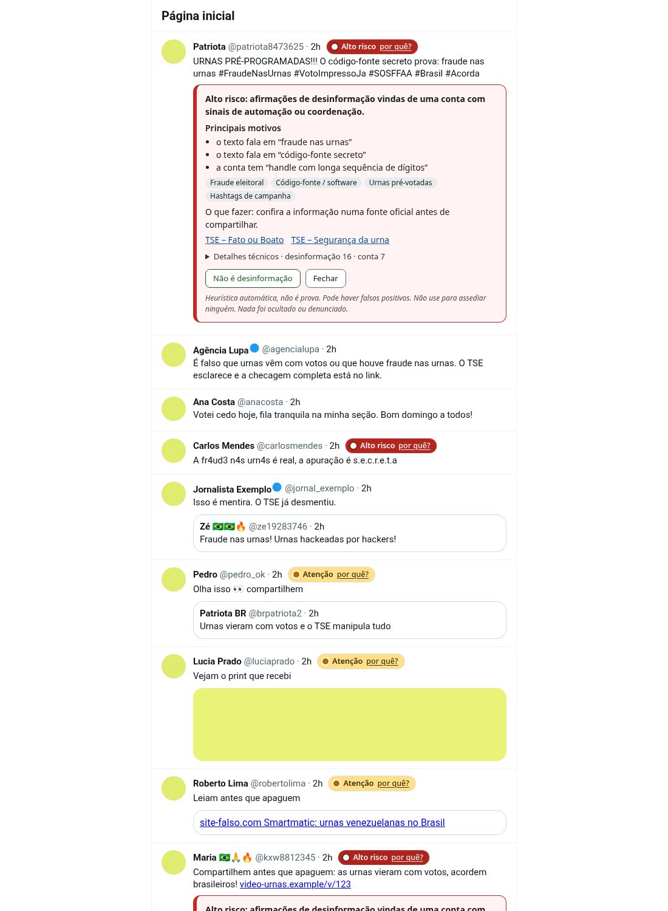
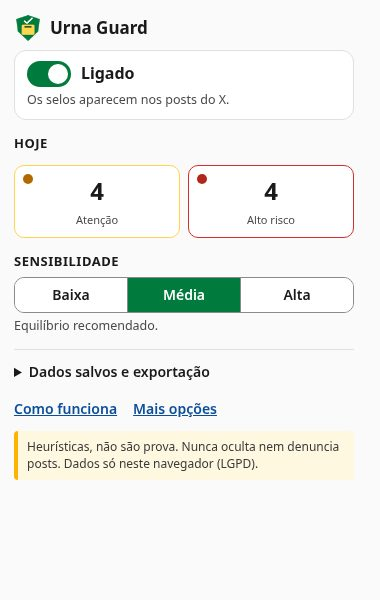
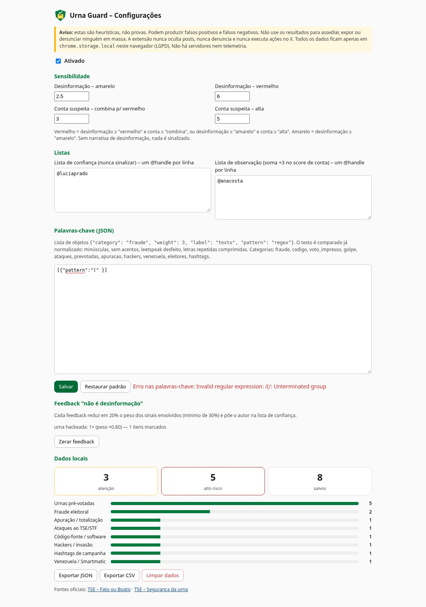

Como instalar
São só 3 passos, cerca de 1 minuto. Escolha seu navegador:
Baixe e descompacte
Copie o endereço abaixo, cole na barra do navegador e aperte Enter (sites não podem abrir este endereço por link):
chrome://extensionsPronto:
Como funciona
A extensão lê só o que já aparece na sua tela e calcula dois scores: um de desinformação e um de conta suspeita.
Atenção por quê?
O post contém uma narrativa conhecida e já desmentida sobre as urnas.
Alto risco por quê?
Narrativa forte publicada por uma conta com vários sinais de ser falsa ou de agir em grupo.
Sem selo
Checagens, desmentidos, ironia ("dizem que…") e negações ("não houve fraude") reduzem o alerta. Nenhum post é ocultado.
📝 Sinais no texto
São 49 narrativas com pesos. O texto é limpo de truques como fr4ud3, f.r.a.u.d.e, fraaaude, letras invisíveis e erros de digitação. Também são lidos tweets citados, cards de link e descrições de imagens.
👤 Sinais da conta
Nome de usuário com muitos números, foto padrão, nome genérico ou cheio de emojis, bio de "perfil reserva", conta nova, texto quase igual em várias contas, o mesmo link repetido e rajadas de posts.
Categorias de boatos detectados
- Fraude eleitoral
- Código-fonte / software
- Voto impresso / auditoria
- Intervenção / golpe
- Ataques ao TSE/STF
- Urnas pré-votadas
- Apuração / totalização
- Hackers / invasão
- Venezuela / Smartmatic
- Eleitores fantasmas
- Hashtags de campanha
Veja como fica



Errou? Clique em "Não é desinformação" no painel. A extensão aprende com isso e passa a confiar naquele autor, tudo no seu computador.
Privacidade e LGPD
Nada sai do seu navegador. Leia a política de privacidade completa.
- 100% local: configurações e alertas ficam só no armazenamento do seu navegador.
- Sem internet: nenhum envio a servidores, nenhuma telemetria, nenhum rastreador.
- Sem senhas nem tokens: a extensão só lê a página que você já está vendo.
- Você no controle: apague tudo com um clique.
- Nunca oculta posts e nunca denuncia ninguém.
- Não faz nada sozinha no X: não curte, não responde, não bloqueia, não segue.
- As exportações têm nomes de usuário e textos, que são dados pessoais. Trate esses arquivos com responsabilidade.
- Este site também não usa cookies, rastreadores nem serviços externos.
Limitações e aviso
- Não entende contexto como uma pessoa. Sarcasmo e boatos novos podem passar.
- A idade da conta e a bio só são lidas quando o perfil aparece na tela.
- A detecção de ação coordenada considera só os posts que você viu.
- Não lê texto dentro de imagens sem descrição nem vídeos.
- O X muda o código do site com frequência, e a extensão pode precisar de atualização.
- Contas reais também podem ter números no nome de usuário ou foto padrão.
Dúvidas frequentes
O que significam as cores do selo?
Amarelo (Atenção): o texto repete uma afirmação comum de desinformação sobre as urnas. Vermelho (Alto risco): além disso, a conta tem sinais de automação ou de ação em grupo. Posts sem sinais ficam sem selo. Clique em por quê? no selo para ver os motivos em linguagem simples.
Como deixo a extensão mais ou menos rigorosa?
Clique no ícone do Urna Guard na barra do navegador e escolha a sensibilidade: Baixa (menos alertas), Média (recomendada) ou Alta (mais alertas, mais falsos positivos). No mesmo lugar há o interruptor para ligar e desligar e os contadores do dia.
É seguro instalar fora da loja?
A extensão só pede para guardar dados localmente e só funciona em x.com e twitter.com. O código é aberto e legível. Mesmo assim, instale extensões apenas de fontes em que você confia. Quando ela estiver nas lojas oficiais, prefira instalar por lá.
Apareceu um aviso sobre "modo do desenvolvedor". É normal?
Sim. Chrome e Edge avisam sobre extensões instaladas manualmente. Pode fechar o aviso.
Funciona no celular?
Não. Os navegadores de celular não aceitam esse tipo de extensão. Use no computador (Windows, Mac ou Linux).
Funciona no Brave, Opera ou Vivaldi?
Sim. Use o pacote do Chrome e siga os passos do Chrome, trocando o endereço para brave://extensions, opera://extensions ou vivaldi://extensions.
Por que no Firefox ela some quando fecho o navegador?
O Firefox só mantém instaladas extensões assinadas pela Mozilla. Enquanto a versão assinada não sai, a instalação pelo about:debugging é temporária.
Como atualizo?
Baixe o novo arquivo, substitua o conteúdo da pasta e clique em ↻ (recarregar) no cartão do Urna Guard na página de extensões. Pelas lojas, a atualização será automática.
Como desinstalo?
Na página de extensões, clique em Remover no cartão do Urna Guard. Os dados locais são apagados junto.
Um post com selo é necessariamente falso?
Não. O selo indica sinais que costumam aparecer em desinformação. Confira sempre em fontes oficiais.